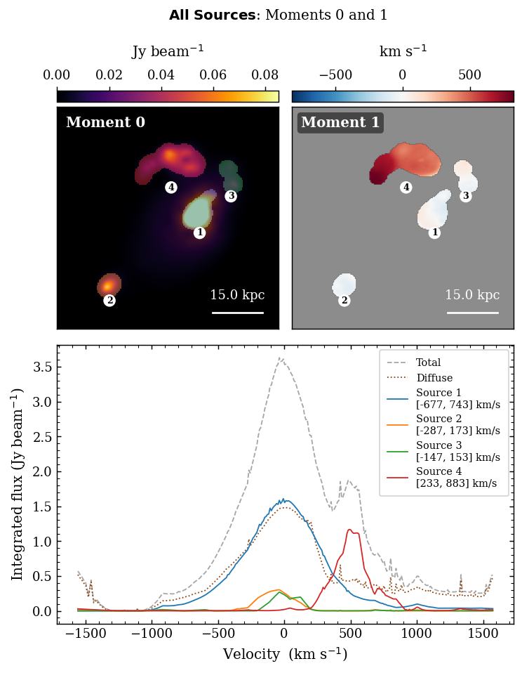

Graphical Interface#
NEMO ships a self-contained Tkinter GUI that lets you run the full pipeline interactively — no Python scripting required. Launch it with:
nemo-gui # via the installed entry-point
python -m nemo.gui # directly from the source tree
—
Overview#
The GUI is a four-card workspace that mirrors the pipeline stages. Each card becomes active only after the previous stage completes, guiding you through the workflow in order.
{kind=link}

Full-field moment maps produced by the GUI’s Combined Analysis window.#
—
Card Layout#
Card |
Purpose |
|---|---|
Moment 0 |
Load a spectral cube and inspect the integrated intensity map.
Supports FITS, HDF5, NumPy |
Wavelet Detections |
Configure the starlet wavelet detector, run source identification, and browse per-channel detection overlays. |
Flow Tracking |
Tune TV-L1 optical flow parameters and inspect the per-channel flow field. |
Source Grouping |
Browse the final source catalogue; open moment maps, spectra, and per-source analysis windows. |
The animated GIF strip beneath each card preview is synchronised — all four cards step through spectral channels together at 220 ms per frame.
—
Loading a Cube#
Click Load Cube on the Moment 0 card.
Select a file. Supported formats:
*.fits/*.fit— ALMA FITS cubes; beam and WCS read automatically.*.h5/*.hdf5/*.hdf— HDF5 toy-cube convention (datasetcube, beam attrs,channel_velocities_km_s).*.npy/*.npz— raw NumPy arrays (no beam or WCS).
The moment-0 map renders immediately. A scale bar and beam ellipse appear if pixscale and beam metadata are present.
Cube scaling (available immediately after load):
Mode |
Effect |
|---|---|
|
No transformation; raw flux values passed to the detector. |
|
|
|
|
—
Wavelet Detection — Configure & Run#
Click Configure & Run Decomposition on the Wavelet Detections card to open the Scale Viewer.
Scale Viewer#
The Scale Viewer renders the per-channel starlet coefficient maps side-by-side. Use it to choose the detail band that best isolates your sources before committing to a full pipeline run.
Control |
Description |
|---|---|
Number of scales radio buttons |
Sets the total decomposition depth J (2 … max). Max is floor(log₂(min(H,W))) − 1. |
Choose scale radio buttons |
Highlights the selected detail band (1-based). The chosen scale is used for component extraction. |
k-sigma |
Detection threshold in units of per-scale noise σ. Lower values detect fainter sources at the cost of more false detections. |
Min area (px) |
Discard connected components smaller than this many pixels. |
Flux threshold (% of cube max) |
Absolute flux floor expressed as a percentage of the cube maximum. Leave blank to use the automatic k-sigma estimate. |
Save Parameters |
Stores the parameters and closes the viewer. |
Detection parameters#
Parameter |
Default |
Description |
|---|---|---|
|
6 |
Total starlet levels (5 detail bands + 1 coarse residual). |
|
5.0 |
Detection threshold in σ units. |
|
5 |
1-based detail band used for component extraction. |
|
20 |
Minimum component area in pixels. |
|
(auto) |
Absolute flux floor; |
|
|
Anchor noise estimate to the mean-map decomposition. |
Running Source Identification#
Click Run Source ID to execute the full pipeline in a background thread:
Starlet wavelet detection (logs stream to the Wavelet Detections card).
Masked TV-L1 optical flow (logs stream to the Flow Tracking card).
Track linking + split/merge detection (logs to Source Grouping card).
Source grouping + false-detection removal.
The GIF strip updates live as each stage finishes. You can toggle between the preview figure and the log output using the Show Logs / Show Figure button that appears in the top-right corner of each card’s preview square.
—
Optical Flow Parameters#
Open via Optical Flow Parameters on the Flow Tracking card at any time after loading a cube.
Parameter |
Default |
Description |
|---|---|---|
|
5 |
Minimum pixel overlap between an advected mask and a detected component footprint to accept a track continuation. |
|
5 |
Maximum consecutive unmatched channels before a track is deactivated. |
—
Slice Viewer#
Available from all four cards via View Slice, View Detections, View Flow per Channel, and View Sources per Channel.
Control |
Description |
|---|---|
Colormap dropdown |
Switch between inferno, viridis, magma, plasma, and seven other colormaps. |
Norm radio buttons |
|
vmin / vmax sliders |
Fine-tune the display range; value labels update in real time. |
Channel slider |
Step through the cube one channel at a time. In detection / flow / sources modes only active channels are shown. |
Sources checkbox panel (sources mode only) |
Toggle per-source overlay visibility. |
—
Analysis Windows#
Both windows open from the Source Grouping card after tracking completes.
Combined Analysis#
Opens with Combined Analysis. Shows:
Moment 0 — integrated intensity map with per-source colour overlays.
Moment 1 — flux-weighted mean velocity map masked to source footprints.
Integrated spectra — toggleable curves for the total flux, diffuse (non-source) flux, and each individual source.
Individual Source Analysis#
Opens with Individual Analysis. Cycle through sources using the radio buttons on the right panel. For the selected source shows:
Moment 0 crop — centred on the source bounding box with a 8 px padding.
Moment 1 crop — flux-weighted velocity map inside the footprint.
Spectrum — integrated flux per channel with a shaded span marking the detected channel range.
—
View All Logs#
Click View All Logs in the banner (left sidebar) to open a scrollable window containing the full pipeline output from all three processing stages, separated by section headers.
—
Keyboard & Mouse#
Action |
Effect |
|---|---|
Channel slider drag |
Step through cube channels in any viewer. |
Colormap / Norm change |
Instant redraw — no recomputation needed. |
Toggle button (preview square) |
Switch between figure preview and log output within each card. |
Source checkboxes (sources mode / combined analysis) |
Hide/show individual source overlays without rerunning. |
—